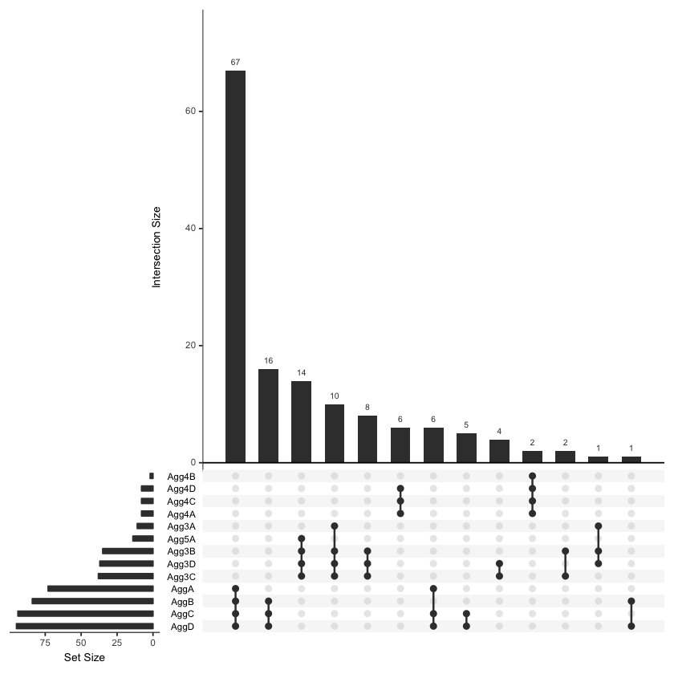
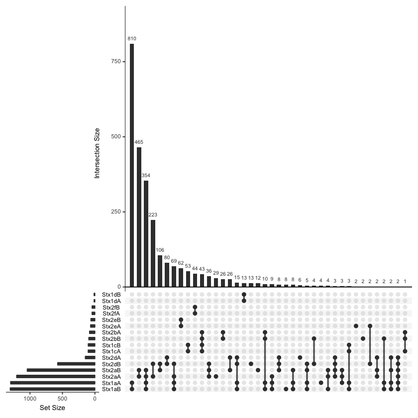
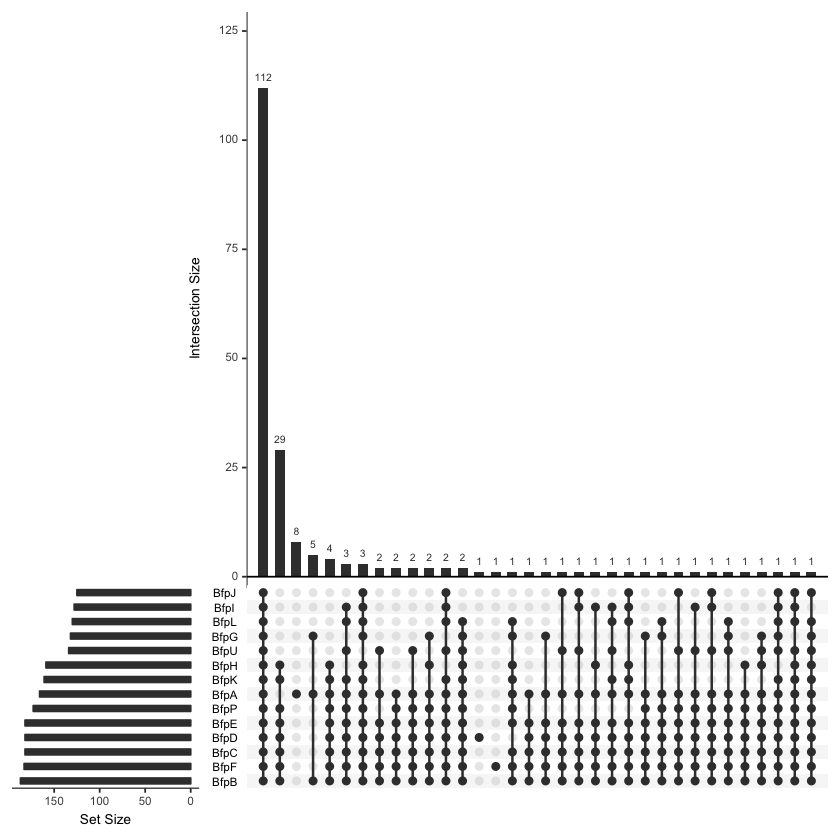
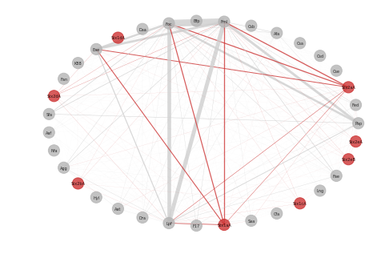
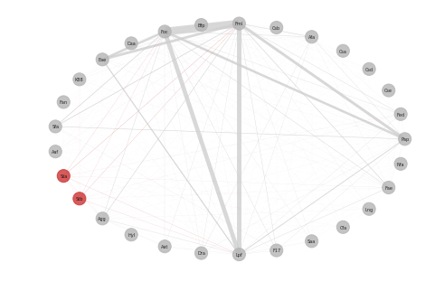
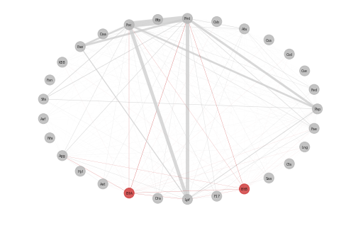
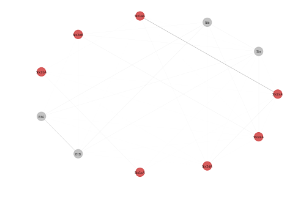

Project of Escherichia coli¶
Overview¶
Escherichia coli is a Gram-negative, rod-shaped bacterium belonging to the family Enterobacteriaceae that was described in 1885 by a German pediatrician. Pathogenic E.coli is versatile due to the diversity of their gene sets. Virulence factors usually located on a virulence plasmid and can be acquired through gene transfer.Different combination of virulence factors may caused to different illness among human and animals.
This time, we investigate the co-occurrance of virulence factors among all the available genome in the Genbank. Meanwhile, we use phylogenetic tree to investigate relationship between different O/H serotype.
Genome Download¶
Install Wget¶
On MacOs
ruby -e "$(curl -fsSL https://raw.githubusercontent.com/Homebrew/install/master/install)"
brew install wget
On Windows
Download [wget](http://gnuwin32.sourceforge.net/packages/wget.htm)
Download via accession number¶
According the assembly_summary_genbank in NCBI ftp site, we can get the genome through the organism name
import os
os.mkdir("Ecoli_genome")
os.chdir("Ecoli_genome")
with open(r'assembly_summary_genbank.txt') as f:
for i in f.read().split('\n')[2:-1]:
os.system('wget '+i+'_genomic.fna.gz')
or Use Pandas
import pandas as pd
f=pd.read_table("assembly_summary_genbank.txt",sep='\t',header=1)
for i in f[f['organism_name']=='Escherichia coli']['ftp_path']:
os.system('wget '+i+'_genomic.fna.gz')
Translate into amino acid sequence¶
Usually I only download fna file, and use Prodigal to translate nucleotide into amino acid sequence.
for i in os.listdir('.'):
order = 'prodigal -i '+i+' -q -a '+i'.faa'+' -d '+i+'.nucl'+' -o '+i+'.out'
print order
os.system(order)
Now we can get predicted protein sequence of all E.coli genomes.
Virulence Factors Detection¶
We use all protein sequence to run BLAST against a In-house collected gene set:
cat *.faa > Ecoli.faa
makeblastdb -in VF.faa -dbtype prot
blastp -query Ecoli.faa -db VF.faa -out VF.blast -outfmt 6 -evalue 1e-10 -num_threads 8 -num_alignments 1
Result Analysis
# Get_Strain_VF_Profile_Matrix:
strain_profile={}
vfs=[]
with open(r'VF.blast') as f:
data=f.read().split('\n')[-1]
for i in data:
strain=i.split('\t')[0].split('|')[0]
if i.split('\t')[2] >= 60:
if i.split('\t')[2] not in vfs:
vfs.append(i.split('\t')[2])
if i.split('\t')[0].split('|')[0] not in strian_profile:
strain_profile[starin]=[i.split('\t')[1]]
else:
strain_profile[strain].append(i.split('\t')[1])
# Write File
outfile=open(r'Strain_Profile.csv','w')
outfile.write(' ,'+','.join(vfs)+'\n')
for i in strain_profile:
outfile.write(i)
for j in vfs:
if j in strain_profile[i]:
outfile.write(',1')
else:
outfile.write(',0')
outfile.write('\n')
outfile.close()
Data visualization
Use UpsetR:
# Show coexist between Agg subunit
library(UpSetR)
upset(f,order.by="freq",sets=c('Agg3A','Agg3B','Agg3C','Agg3D','Agg4A','Agg4B','Agg4C','Agg4D','Agg5A','AggA','AggB','AggC','AggD'))

# Show co-exist between Stx toxin
upset(f,order.by="freq",sets=c("Stx2aB","Stx2aA","Stx2bA","Stx1aA","Stx1aB","Stx2dB","Stx2bB","Stx1cA","Stx1cB","Stx2dA","Stx1dB","Stx2fA","Stx2fB","Stx1dA"))

# Show co-exist between Bfp toxin
upset(f,order.by = "freq",sets=c("BfpA","BfpB","BfpC","BfpD","BfpE","BfpF","BfpG","BfpH","BfpI","BfpJ","BfpK","BfpL","BfpP","BfpU"))

Use NetworkX
# Show co-exist between Shiga toxin and [Simplified Adhesin Factors]
import matplotlib.pyplot as plt
import networkx as nx
def get_co_oc_from_show_vfs(show_vf):
cooc=[]
with open(r'adhesin_simplify.csv') as f:
data=f.read().split('\n')[:-1]
for i in data:
show_vf.append(i.split(',')[1])
for i in range(len(show_vf)):
for j in range(len(show_vf)):
if j>i:
con=0
for k in strain_profile:
if show_vf[i] in strain_profile[k] and show_vf[j] in strain_profile[k]:
con+=1
if con != 0:
cooc.append((show_vf[i],show_vf[j],con))
show_vf=['Stx1aA','Stx1cA','Stx1dA','Stx2aA','Stx2bA','Stx2dA','Stx2eA','Stx1aB','Stx1cB','Stx1dB','Stx2aB','Stx2bB','Stx2dB','Stx2eB']
get_co_oc_from_show_vfs(show_vf)
G.nodes()
G=nx.Graph()
G.add_weighted_edges_from(cooc)
weights =[]
weights= [w[2]['weight']*0.001 for w in G.edges(data=True)]
node_color=[]
for i in G.nodes():
if 'Stx' in i:
node_color.append('#CD3333')
else:
node_color.append('#B5B5B5')
pos=nx.circular_layout(G)
nx.draw(G, pos,node_size=200, width=weights,with_labels=True,font_size=5,node_color=node_color,edge_color=color,alpha=0.8)

Adhesin factors and heat stable toxin

Adhesin factors and heat labile toxin

All toxin

In Silico Serotyping¶
To understand the relationship between different serotype and their virulence profile, we use BLAST based in silico methods to serotype E.coli via SerotypeFinder.
cat *.faa > Ecoli.faa
makeblastdb -in serotype.faa -dbtype prot
blastp -query Ecoli.faa -db serotype.faa -out EcoliSerotype.blast -outfmt 6 -evalue 1e-10 -num_threads 8 -num_alignments 1